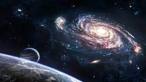

우주(宇宙)는 '시간과 공간' 또는 '시간과 공간의 총체'를 의미하는 어휘로, 크게 두 가지 개념으로 구분된다.
좁은 의미의 우주(The Space)는 일반적으로 '우주' 하면 떠올리는 지구 대기권 바깥의 검은 공간을 가리킨다. 그 경계 지점은 고도 118km에 해당한다. 이전에는 인공위성이 공전할 수 있는 한계 고도인 150km 이상을 우주로 보았으나, 우주경계선#을 발견한 뒤로 다른 우주 관련 기록#과 함께 수정되었다. 협의의 우주를 지칭할 때는 보통 "우주에도 생물이 존재할까?", "우주에 나가면 어떻게 될까?"와 같이 인간이 살아가는 지구를 포함시키지 않고 구별한다.
넓은 의미의 우주(The Universe)는 '세상', '모든 사물이 존재하는 공간', '세상에 존재하는 모든 것'을 말하며, 그 범위를 형용할 수조차 없는, 훨씬 큰 규모의 공간을 가리키는 명칭이다. 형이상학에서 주로 다루는 우주가 이런 광의의 우주이다. 인간 또한 우주에 존재하는 물질과 에너지가 특정한 형태로 뭉쳐진 존재이므로 곧 우주의 일부, 부분집합이라 부를 수 있다. 철학 용어인 '소우주' 역시 우주가 아닌 다른 구조나 미시세계 등에도 우주와 같은 연속적인 조직이 존재한다는 것이므로 광의의 우주라고 할 수 있으며, '소우주'를 사용할 때는 실제 우주를 '대우주'라고 불러 구분한다.

상대성 이론(相對性理論 / Theory of Relativity)은 알베르트 아인슈타인이 주장한 인간, 생물, 행성, 항성, 은하 크기 이상의 거시 세계를 다루는 이론이다. 양자역학과 함께 우주에 기본적으로 작용하는 법칙을 설명하는 이론이자 현대 물리학에서 우주를 이해하는 데 사용하는 두 개의 가장 근본적인 이론이다. 시간과 공간을 시공간으로, 물질과 에너지를 통합하는 데에 성공해 빛과 어둠을 인류에게 가져다 주었다.[1] E=mc^2E=mc
2
이 바로 특수 상대성 이론에서 제시된 질량-에너지 등가 방정식이다.